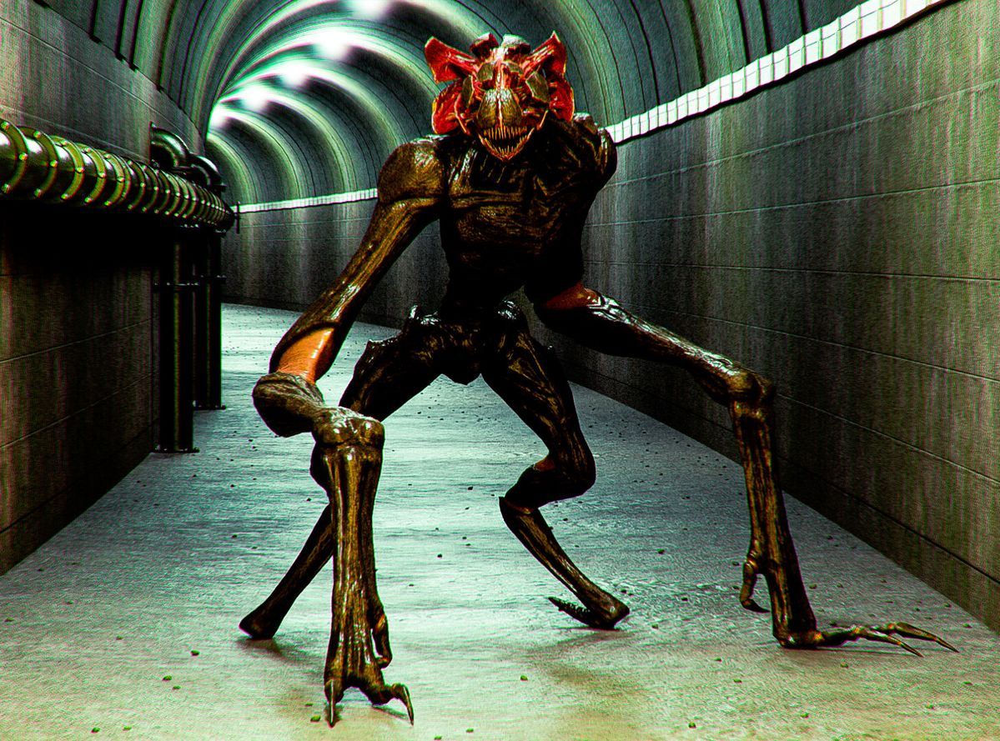
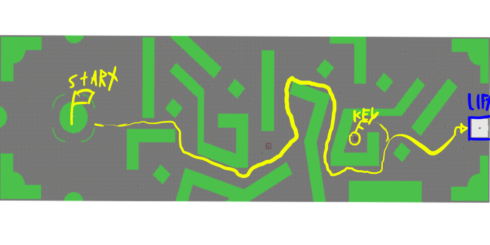
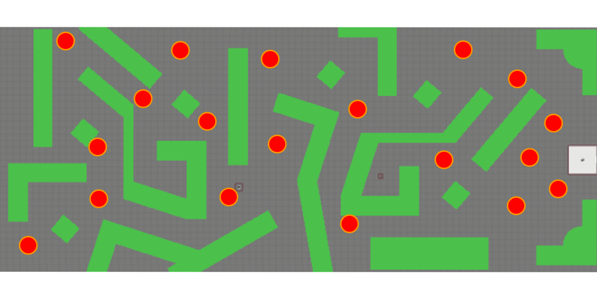

Player Echolocation
- Expanding pulse with controlled radius
- Temporarily reveals geometry
- Encourages deliberate timing and spatial memory
Class Project • Horror Systems & Accessibility Design
Echolocation Mechanic, Prototype Breakdown
A third-person horror prototype where the protagonist cannot hear, so sound becomes something the player can see.
▸ click anywhere to send a pulse
Prototype gameplay · watch on YouTube
This prototype explores a third-person echolocation mechanic designed to replace traditional audio-based navigation in a horror environment. The project investigates how visual sound cues can reinforce spatial awareness, tension, and accessibility, specifically for players who are deaf or hard of hearing.
Modern horror heavily relies on sound: tension cues, navigation hints, enemy signaling. This project challenges that convention by designing a protagonist who cannot hear, shifting sensory responsibility entirely to the player through visible sound waves.
The goal was two-fold:
The core idea draws influence from characters like Muteba Gizenga (Kengan Ashura) and Daredevil, both relying on sensorial compensation to map their surroundings. Translating this concept into gameplay required building a stylized, readable interpretation of “visual hearing.”
Additional inspiration comes from A Quiet Place. While the franchise features creatures that hunt using sound, this project intentionally inverts the dynamic: monsters here are deaf and hyper-visual, while the player lacks hearing but uses echolocation. Both sides operate with sensory limitations, creating a unique tension model through asymmetric information.

Echo Mechanic showcases a mechanic built around sound propagation, using spatial detection to reveal the environment dynamically. This page breaks down the concept, design challenges, and the implementation insights behind it.
To direct players toward the level goal, the elevator emits a slow, long-range global pulse:
A small 2D re-creation of the three pulses for this page, not the prototype itself. Cyan is your pulse, red is the deaf, hyper-visual enemy's danger pulse (it only reveals itself when you pulse near it, and it teleports between junctions), and gold is the elevator's slow global pulse.
Design a tall, labyrinth-style environment where echolocation is the player’s primary navigation tool. The layout encourages deliberate pathfinding, forcing the player to rely on timed pulses rather than static visibility. Long corridors, angled passages, and sharp intersections amplify disorientation and reward careful rhythm-based scanning.

To reinforce paranoia and sustain unpredictable tension, enemy teleportation nodes were strategically placed throughout key intersections and transitional spaces. These moments force the player to commit to direction with limited visibility, creating unpredictability and preventing route memorization.

Additional teleport nodes were placed near the elevator objective to heighten pressure as the player approaches safety. This ensures the final stretch stays tense and reinforces the idea that echolocation remains essential until the last moment.
This was a class project where we had to implement a mechanic outside our comfort zone. I took a leap on echolocation, mostly because the accessibility question behind it was one I wanted to test: what does horror look like when the protagonist, and the player, can’t rely on audio?
Once the prototype was running I found echolocation horror games already on Steam, Stifled among them. That cooled my motivation to push this one toward a full game, and it taught me to look at the market earlier. If I returned to it, I would build around the parts that are mine:
This prototype shows how accessibility and horror design can reinforce each other. By removing the player’s ability to hear, the experience leans into a different type of tension, one built on timed reveals, limited information, and visual danger cues.
It reinforces a simple principle:
Accessibility can be a source of innovation.
Exclusive devlogs, prototype showcases, and behind-the-scenes breakdowns.
Keep exploring the systems and loops I’ve designed.